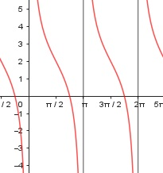

Aufgabe 187 f(x) = 2 * cot x + 2 x im Bogenmaß cos x f(x) = 2 * ------- + 2 sin x 1. Ableitung: Produkt-, Summen- und Quotientenregel u = 2 * cos x, u' = -2 * sin x v = sin x, v' = cos x -2*sin x * sin x - 2*cos x * cos x f'(x) = - ------------------------------------ sin² x -2 (sin² x + cos² x) f'(x) = ---------------------- sin² x -2 f'(x) = -------- sin² x 2. Ableitung Quotienten- und Kettenregel u = -2, u' = 0 v = sin² x², v' = 2 * sin x * cos x -(-2 * 2 sin x * cos x) f''(x) = -------------------------- sin4 x 4 * cos x f''(x) = ------------ sin³ x Zur Beurteilung, ob f'''(x) ≠ 0: u = 4 * cos x, u' = -4 * sin x u' -4 * sin x -4 f'''(x) = --- = ------------ = --------- v sin³ x sin² x --> ist ≠ 0 für alle x ≠ 0, π, 2π Polstelle: sin x = 0 x = 0, π, 2π Definitionsbereich: 0 < x < 2π x ≠ 0, π, 2π Symmetrie zur y-Achse bzw. zum Punkt (0|0): f(-x) = 2 * cot (-x) + 2 = 2 * (-cot (x)) + 2 f(-x) = -2 * cot x + 2 ≠ f(x) --> keine Achsensymmetrie -f(-x) = -(-2*cot(x) + 2) = 2*cot(x) - 2 ≠ f(x) --> keine Punktsymmetrie Wertebereich: -∞ < f(x) < ∞ Nullstellen: f(x) = 0 2 * cot (x) + 2 = 0 |-2 2 *cot (x) = -2|:2 cot x = -1 1 ------- = -1 |*tan x tan x 1 = -tan x |*(-1) π tan x = -1 --> x = -0,785 = - --- im Bogenmaß 4 Der Tangens ist am Einheitskreis im 2. Und 4. Quadranten negativ: π 3 x1 = π - --- = --- π 4 4 π 7 x2 = 2π - --- = ---π 4 4 3 7 N1(---π|0), N2(---π|0) 4 4 Schnittpunkt mit der y-Achse: x = 0 Polstelle --> kein Schnittpunkt Extrempunkte: f'(x) = 0 -2 --------- = 0 |*sin² x sin² x -2 = 0 Widerspruch --> keine Extrempunkte Wendepunkte: f''(x) = 0 4 * cos x ------------ = 0 |*sin³ x sin³ x 4 * cos x = 0 |:4 π 3 cos x = 0 --> x1 = ---, x2 = ---π 2 2 cos (π/2) f(π/2) = ----------- + 2 = 2 = f(3π/2) sin (π/2) WP1(π/2|2). WP2(3π/2|2) Graph:
